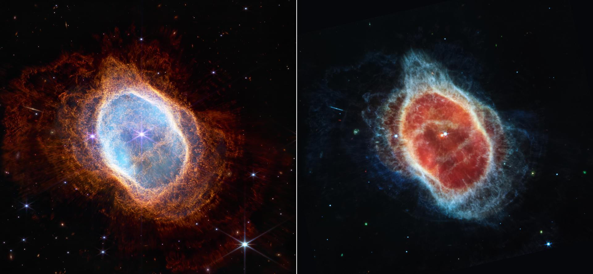
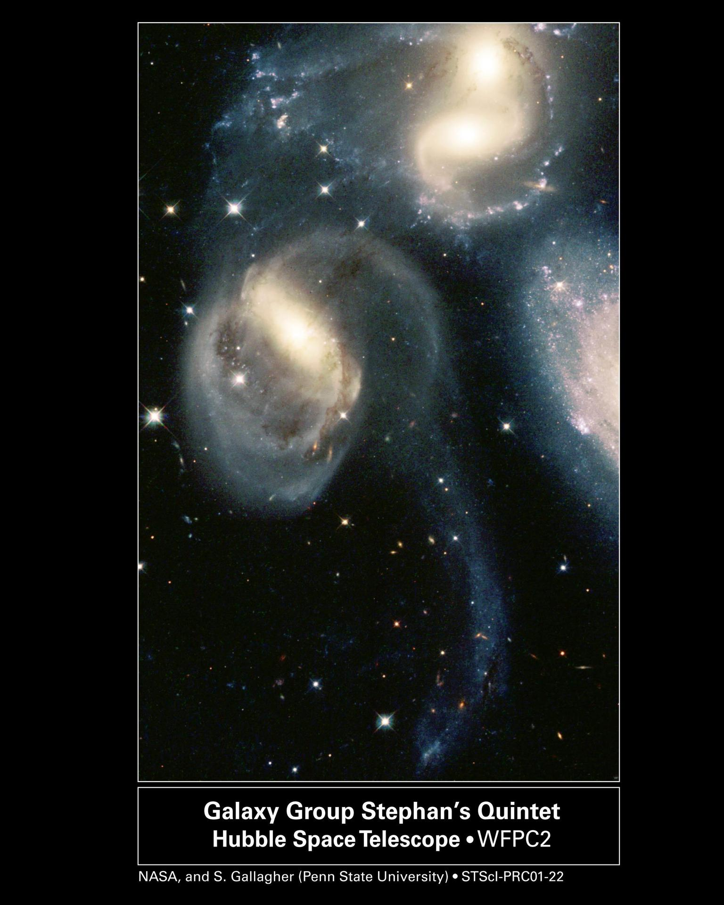

01 / 影像
先公开三幅
其余九幅只在暗房开放。
现场不看屏幕，所有影像按原始比例输出。



影像版权归 NASA / ESA / CSA 所有，展览输出经公共领域授权。
十二幅深空影像 · 一间暗房 · 一次向外的回望
我们抬头看到的星光，
有一些在人类出现之前就出发了。深场，是把这件事做成一面墙。
展览只做一件事：按光的出发时间排序。第一幅最近，最后一幅在 134 亿年前。你沿着墙走，其实是在往回走。每幅影像下面只有三个数字——目标编号、曝光时长、光走了多久。没有解说词，没有背景音乐。
其余九幅只在暗房开放。
现场不看屏幕，所有影像按原始比例输出。


影像版权归 NASA / ESA / CSA 所有，展览输出经公共领域授权。
暗房每天只开两场，每场四十分钟。入场后不再说话，手机留在门外。第一幅影像在正前方，亮度调到刚好能看见轮廓。第二十分钟，你会开始看见边缘的星点——那不是屏幕变亮了，是眼睛变了。